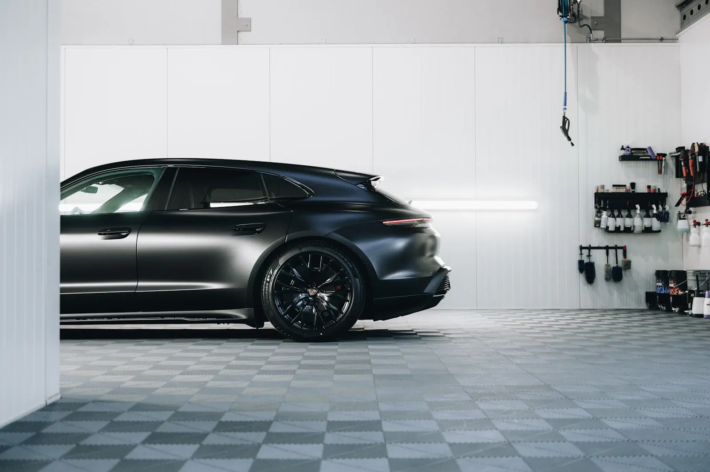
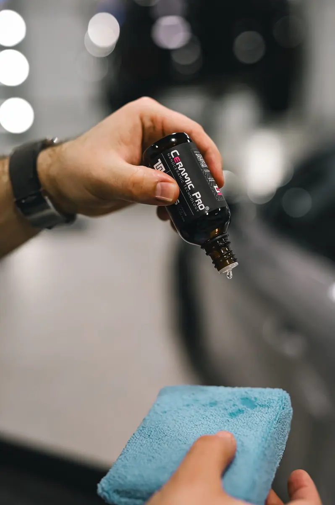

Кузов / Салон / Защита
Лак.
Свет.
Чистая форма.
Уход, который начинается с состояния автомобиля. Разберёмся, что нужно покрытию сейчас и как сохранить результат в ежедневных поездках.
Найти свой уходAURUM — автомобильный детейлинг

01 / Подбор процедуры
Что нужно
вашему автомобилю?
Выберите задачу — покажем состав работ и что обсудить на осмотре.
Кузов / Коррекция
Деликатная полировка
Удаляем загрязнения, оцениваем лак при направленном свете и выбираем степень коррекции. Начинаем с тестового участка, чтобы не снимать лишний слой.
- Мойка и очистка от стойких загрязнений
- Осмотр покрытия и тестовый участок
- Полировка с учётом состояния лака
На осмотре: состояние лака и допустимая глубина коррекции
Точный объём работ и срок определяют после осмотра.
Выбрать эту процедуру02 / В студии
Сначала осмотр.
Потом — работа.
Полировка нужна не каждому автомобилю. Состав процедур выбирают под состояние материалов и привычный режим эксплуатации.
- 01
Разобраться в задаче
Как моете автомобиль, где храните и что именно не устраивает: риски, пятна, матовость или загрязнения салона.
- 02
Согласовать объём
Осмотреть кузов и материалы, отметить ограничения. Уточнить состав работ, стоимость и время до передачи автомобиля.
- 03
Передать результат
Проверить поверхности при свете, показать обработанные зоны и объяснить дальнейший уход без сложных ритуалов.

03 / После студии
Результат
остаётся с вами.
Даже защищённый кузов требует бережной мойки. Главный принцип: меньше сухого трения и больше внимания к чистоте инструмента.
- Сначала смыть песокНе протирать сухой кузов и не удалять пыль жёсткой щёткой.
- Выбрать мягкую химиюПроверять совместимость средств с покрытием и материалами салона.
- Не откладывать очисткуУдалять органические загрязнения бережно, без усилия и абразивов.
04 / До визита
Несколько
практичных ответов.
Нужно ли полировать новый автомобиль?
Не обязательно. Сначала оценивают лак: следы транспортировки, предпродажной подготовки и мойки. Если коррекция не нужна, достаточно подготовки поверхности под выбранную защиту.
Плёнка и защитное покрытие решают одну задачу?
Нет. Плёнка помогает снизить риск мелких механических повреждений на закрытых ею деталях. Покрытие облегчает уход, но не заменяет плёнку и не делает кузов неуязвимым.
Можно ли почистить только водительское место?
Да, локальную задачу стоит обсудить отдельно. Для равномерного результата учитывают состояние соседних элементов и совместимость составов с кожей, текстилем и пластиком.
Что подготовить к первому обращению?
Марку и модель, год выпуска, несколько фото при дневном свете и описание задачи. Окончательный состав работ согласуют после осмотра.
05 / Ваш автомобиль
Начнём
с деталей.
Опишите автомобиль и то, что хотите изменить. Сформируйте текст обращения, чтобы сохранить его или передать в выбранную студию.